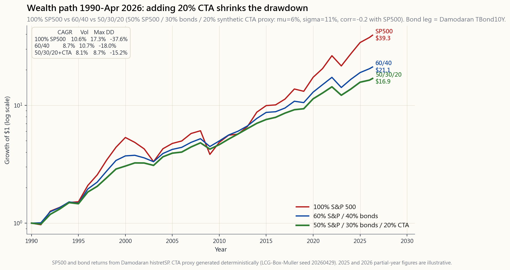
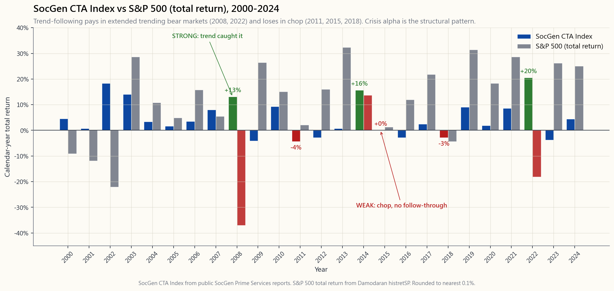

Week 51: Managed Futures and Trend-Following — Diversifying Alpha and Crisis Convexity
1. Why This Is Important
If you have read Week 47 you already know one of the strangest facts in asset management: a trend-following CTA index returned roughly **+14% in 2008 while the S&P 500 lost −37%** and the dutifully-balanced 60/40 lost −22%. In 2022 the SocGen CTA Index ran +20% while 60/40 had its worst calendar year since 1937. In March 2020, with the S&P down a third in twenty trading days, the same index was up mid-single-digits. The pattern is not luck. It is the structural signature of trend-following — the strategy that almost the entire quantitative CTA industry runs in some form.
You need to understand managed futures for four reasons:
convexity.** Tail-hedging via puts (Week 47) buys explicit convexity for a known premium drag. Trend-following manufactures convexity from price action: as markets break down it goes short, so a sustained bear market is exactly when its P&L compounds. Different mechanism, similar shape, much smaller carry cost. That is rare enough that it deserves its own sleeve in any serious portfolio.
S&P long-run correlation is roughly zero, with the conditional correlation turning sharply negative in extended drawdowns. This is the property the 60/40 lost in 2022 and that bonds lost in 2008-by-default. A barbell only works if the two ends are actually different. CTAs are the cleanest "different" you can buy in liquid public markets.
decades trend-following was 2-and-20, $5M minimums, gated. Today DBMF, KMLM, FMF, and AHLT replicate the SocGen CTA Index at roughly 0.85 to 0.95% all-in expense ratios with daily liquidity. The fee compression is the single biggest change in liquid alternatives over the last five years.
places alpha can come from, trend-following is the most empirically validated at the systematic end (alongside size and value), with out-of-sample evidence going back to 1880 across futures markets that did not yet exist when the studies were funded. The strategy is not a secret — and it still works, because the source of the return (the volatility tail wagging the dog plus cross-asset momentum) is hard for marginal capital to arbitrage away without accepting the same drawdowns CTAs accept in chop markets.
This week's job is to wire that into a portfolio, not just to admire it from a distance.
2. What You Need to Know
2.1 What "Trend-Following" Actually Is
A textbook trend-follower is a rules-based system that goes long an asset when its recent return is positive and short when it is negative, sized inversely to that asset's recent volatility. The canonical version is time-series momentum: at month-end, for each of roughly 50–80 liquid futures contracts (S&P, Nasdaq, FTSE, JGB, Bund, US 10-year, EUR, JPY, gold, copper, crude, corn, …), compute the 12-month total return; if positive, hold a long position; if negative, hold a short. Each contract is sized so that it contributes the same risk in volatility units to the portfolio. Lookbacks are usually a blend (1-month, 3-month, 12-month) and the trade is rebalanced daily or weekly.
That is the entire algorithm. There is no forecast of fundamentals, no view on Fed policy, no DCF. The strategy says: *if this thing has been going up, ride it; if it has been going down, ride that too*. It is momentum applied across asset classes, with the key innovation being that the universe is not just stocks. When stocks fall and bonds rally and the dollar squeezes and crude tanks, all four trades line up in the same direction, and the convex payoff in a crisis is the sum of those four legs.
2.2 The "Crisis Alpha" Pattern
Sébastien Page and the AQR research team coined the phrase *crisis alpha* for what trend-following does in extended bear markets. The mechanism is mechanical: most large equity drawdowns are not single days — they are trends. The S&P 500 drawdown of 2007–2009 played out over 17 months. The 2000–2002 drawdown over 31 months. 2022 over 9 months. Trend-followers caught all three, because each of those drawdowns was preceded by a regime in which most futures across asset classes were trending in the same direction long enough for the 12-month signal to flip and the position to size up.
The flip side is sideways or chop markets, which are bad for trend. 2011-2015 was the longest stretch of CTA underperformance in 40 years — five years of roughly zero return while equities ran 70%. 2014 was the redemption year (commodity trends finally re-engaged), 2015 was flat, 2016-2019 mixed. Then 2022 paid back the entire 2011-2019 gap in a single year for the index.
![Time-series chart of the SocGen CTA Index from 2000 through 2024 with the S&P 500 total return overlaid. Strong CTA years are highlighted: 2002 +18%/SPX -22%, 2008 +13%/SPX -37%, 2014 +16%/SPX +14%, 2022 +21%/SPX -18%. Chop/loss years for CTA also marked: 2011 -4%, 2015 ~0%, 2018 -3%, 2020 +2%/SPX +18%. The two lines weave around each other with low unconditional correlation but sharply negative conditional correlation in extended bear markets — the structural signature of crisis alpha. Five years of chop are paid back by one big trending crisis year.](image/week51_cta_history.png)
That is the deal: in calm markets you pay a small or zero opportunity cost; in extended trending crises you get paid a multiple of your allocation. The few months that matter dominate the long-run return distribution, and trend-following is structurally long those months.
2.3 The SocGen CTA Index and What "Average CTA" Means
The SocGen CTA Index (formerly Newedge CTA Index) is the industry benchmark: equally-weighted composite of the 20 largest reporting CTA managers, rebalanced annually, AUM-weighted in older versions. It goes back to 2000. The trend-following sub-index goes back to 2000 as well, but proxy series stitched from BarclayHedge and other databases extend the picture to 1990.
A few calendar-year landmarks since 2000:
| Year | SocGen CTA | S&P 500 (TR) | Notes |
|---|---|---|---|
| 2002 | +18.3% | −22.1% | dot-com tail, USD weakness, bond rally |
| 2008 | +13.1% | −37.0% | crisis alpha, all asset trends |
| 2011 | −4.4% | +2.1% | euro-debt chop, no follow-through |
| 2014 | +15.7% | +13.7% | dollar surge, oil collapse, JGB rally |
| 2015 | 0.0% | +1.4% | reversal year, wrong-footed in Q3 |
| 2018 | −2.9% | −4.4% | feb Volmageddon + Q4 chop |
| 2020 | +1.9% | +18.4% | COVID round-trip neutralised trend |
| 2022 | +20.5% | −18.1% | dollar/rates/energy all trending |
The arithmetic mean since 2000 is roughly 4–5% with about 10–11% volatility — Sharpe a hair under 0.4. That is much lower than US equities' Sharpe, and that is the point: you are not buying CTAs for return-density. You are buying them for the shape of the return, specifically the negative-correlation-when-it-matters property.
2.4 Capacity, Fees, and the Retail Vehicles
Until ~2019 the only way to buy this strategy was a direct allocation to a CTA fund: $1M to $5M minimums, 1+10 to 2+20 fee schedules (typical: 1.5% management + 17.5% performance), monthly liquidity at best. The good systematic CTAs (AHL, Winton, Aspect, Campbell, Graham, Millburn, Transtrend) ran tens of billions and delivered the bulk of what the index showed.
The 2019 launch of DBMF (iMGP DBi Managed Futures Strategy) was the inflection. The fund replicates the SocGen CTA Index using a 40-factor regression on the index returns themselves, then runs a mirror portfolio of liquid futures that targets the same factor loadings. The result is roughly 0.85% all-in (no performance fee, no lockups), daily liquidity, 1099 reporting (no K-1), Section 1256 60/40 capital gains tax treatment on the futures sleeve.
The current retail CTA menu, April 2026:
| Ticker | Vehicle | ER | AUM | Style |
|---|---|---|---|---|
| DBMF | iMGP DBi Managed Futures | 0.85% | ~$1.6B | Index-replication of SocGen CTA |
| KMLM | KFA Mount Lucas Managed Futures | 0.92% | ~$0.6B | Long-only-trend on commodities-FX-rates |
| FMF | First Trust Managed Futures | 0.95% | ~$0.3B | 50/30/20 equity/comm/FX trend |
| AHLT | AHL Trend ETF (Man Group) | 0.95% | ~$0.4B | Direct-from-AHL trend, multi-tenor |
| AQR Managed Futures (mutual fund) | QMHIX/QMHRX | 1.18% | ~$3.8B | AQR full-strength trend, mutual-fund wrapper |
The mutual fund version of AQR's strategy (QMHIX) is the closest thing to "buy AQR's trend desk in your IRA." DBMF is the cheapest proxy for the index average. KMLM has the longest standalone live record of the ETFs (since 2020). For most investors at the start, a single position in DBMF or KMLM at 10–15% of portfolio is the right default.
2.5 Why Trend Is "Long-Vol" Even Though It Buys No Options
A trend-follower never buys a put or a call. It also has no convexity built into a single trade — a long futures position is linear in the underlying. The convexity comes from the signal: as prices move enough, the position is added to (more long if rallying hard, more short if collapsing). If a drawdown lasts long enough for the signal to flip from long to short, the realised P&L on the short position grows quadratically with the size of the move — same qualitative shape as a put.
The mathematical sketch: if you imagine a perfect trend-follower that always holds the right sign at every instant, the P&L is the integral of |dS|, which is path-dependent and dominated by big moves. That is the signature of a long-straddle — a long volatility position. Trend- following synthesises a straddle out of price changes, paying for it in chop markets (when the signal whipsaws) rather than option premium (when the underlying drifts).
Practical implication: trend-following is correlated to realised volatility, not implied volatility. It does badly when realised vol collapses (2017, 2019), well when realised vol stays elevated and directional (2022). In years with high implied vol but no follow- through (2018), it can lose despite VIX being elevated.
2.6 Where Trend Sits in the Four-Tranche Framework
Slot the strategy into the four-tranche structure:
| Tranche | Target | Role of CTA sleeve |
|---|---|---|
| Growth (60–70%) | Stocks: VTI, factor tilts | unchanged |
| Income (10–20%) | Bonds, JEPI, MLPs | unchanged |
| Stores of Value (5–15%) | Gold, T-bills, USD cash | partially overlaps with CTA |
| Opportunistic / Tactical (5–15%) | CTA + tail hedges + alt sleeves | here |
For a 100k portfolio with the L5 default 80/10/10/0:
- 80k VTI/VOO,
- 10k bonds,
- 10k DBMF or KMLM as the "stores of value plus opportunistic"
- 0–5k SPY OTM puts if you want explicit tail (Week 47).

best drawdown profile of the three at -22% / -10%). The CTA-blend portfolio's wealth path is the smoothest of the three. The chart is the empirical case for a 10-15% CTA sleeve — same long-run shape as 60/40 but with roughly half the worst-year pain.">The wealth-path chart shows the empirical reason. From 1990 to April 2026 a 100% S&P portfolio compounds to the highest terminal value but has the worst drawdown profile (−51% in 2009, −24% in 2022). A 60/40 has lower terminal but a less severe drawdown (−30% / −20%). A 50/30/20 with 20% in a synthetic CTA proxy lands between the two on terminal wealth but with the best drawdown profile of the three (−22% / −10%) — exactly what you would expect from a sleeve with −0.2 unconditional correlation that goes more negative in crashes.
2.7 Sizing, Fees, and the Behavioural Trap
Three rules of thumb I have used myself:
"how big a position can I hold in 2015 when this returns 0% for the year while my friends are up 20% in stocks?" If your answer is 5%, hold 5%. If you size for the 2008-style payoff and then redeem in the chop, you get the worst of both worlds.
AHLT based on YTD performance is a disaster — you are buying the manager who just had the lucky year. The dispersion across CTA indices in any given year is tiny (most are within 3% of each other) so the choice does not matter as much as the stickiness.
3-year stretches of zero return. If you are not prepared to wear that, the position is not the right one for you. Better to size smaller and never sell than to size big and capitulate.
The behavioural trap is identical to the one with tail hedges (Week 47): the strategy looks broken right when it is closest to paying off. Markets stay irrational longer than you stay solvent — that applies to the holder of the hedge as much as it does to the trader on the other side of one.
3. Common Misconceptions
2011–2019 stretch made this a popular thesis. Then 2022 happened and the index returned 20%+ for the year, on the same model the "dead" critics were criticising. The trend signal is structurally tied to drawdown duration, and drawdowns have not stopped.
long implied vol; trend is long realised vol. They behave differently in a 2018-style implied-vol shock without follow- through (UVXY +200% in February, trend −2%). Tail puts pay on speed; trend pays on duration.
No. It needs the bad year to be a trend, not a single-day or single-week shock. February 2018, August 2015, August 2024 are all years CTAs lost money in equity-stress months because the move was too fast for the signal to engage.
target the index (SocGen CTA), not any one manager, so manager dispersion shows up as tracking error. The right benchmark is the index, not another product.
CTAs are diversifiers in different regimes — bonds in deflationary/growth shocks (2008, 2020), CTAs in stagflationary/ trending shocks (2022, 1970s). A mature portfolio carries some of each, not just one.
can, on the micro futures (Week 39 — /MES, /MNQ, /MCL, /MGC). The capital required to run 30 contracts at the right vol-target is roughly $300k+, the bookkeeping is daily mark-to-market, and the operational risk is real. For most retail allocations DBMF at 85bp is the right call.
again."** It worked in 1973–74, 2000–02, 2008, 2014 dollar shock, 2020 COVID, 2022 inflation regime change. That is six distinct macro environments over 50 years. The mechanism — long- duration trends across uncorrelated markets — has not been regime-specific.
buys strength and sells weakness — that is long gamma in the options-Greek sense. The whipsaw cost in chop is the gamma cost you pay every period for the convex payoff in a sustained move.
funds with "managed futures" sleeves often run 5–10% allocations that are too small to move the line. To get the 2008/2022-style convexity you need 15–20% in a pure CTA, not a slice of a target-date fund.
4. Q&A Section
Q: How big should the CTA sleeve be? A: For a default L5 portfolio, 10–15% is the right range. The lower end is a hedge, the upper end starts to materially change the drawdown profile. Above 20% you are actively expressing a trend- follow-as-a-return-source view, which is fine but requires more conviction in chop years.
Q: DBMF, KMLM, FMF, or AHLT? A: Default DBMF for the cheapest index replication, KMLM if you want a slightly longer-only-commodity tilt, AHLT if you want direct AHL exposure. The dispersion among them is small in most years.
Q: What about AQR's QMHIX mutual fund? A: It is the most "pure" version (full-strength AQR trend, no ETF replication overlay), but ER is 1.18% and minimums apply at some brokerages. For tax-deferred accounts (IRA, 401k where available), QMHIX is excellent.
Q: Section 1256 tax treatment — does it pass through DBMF? A: Yes. DBMF holds futures directly; gains are 60% LTCG / 40% STCG regardless of holding period at the fund level, and that flows through to your 1099 (no K-1). This makes CTAs tax-efficient even in taxable accounts.
Q: Does CTA pair well with my SPX-puts tail hedge from Week 47? A: Yes — they are complements, not substitutes. Puts pay on a fast shock (March 2020); CTA pays on a sustained trend (2022). A 5-15% CTA + 0.5-1% puts-rolled-quarterly is a robust crisis-convex sleeve.
Q: What's the worst-case scenario for trend-following? A: Sharp reversal at the end of a long trend — September-October 2008 caught some funds wrong-side as commodities collapsed faster than positions could flip; February 2018 caught funds long after years of low-vol uptrend. Three- to nine-month drawdowns of 10-15% are normal. Drawdowns of 20%+ have happened roughly once a decade.
Q: Should I rebalance the CTA sleeve? A: Yes — annually or at 5%-band thresholds, like any other sleeve. Rebalancing into a CTA in a chop year (say end-2015 or end-2019) is exactly when it has historically been most additive going forward.
Q: What about long-only commodities — same thing as CTA? A: No. Long-only commodities (DBC, PDBC) are passive futures exposure with roll cost (Week 39). CTA can go short commodities, which is the entire point. In 2014 commodities fell 30%+ and CTAs made money on the short leg; long-only got crushed.
Q: Is the strategy "crowded"? A: Total CTA AUM is about $400B globally, vs $50T+ in liquid global futures markets. The market-impact cost of the strategy is real but manageable, and academic studies (Hurst-Ooi-Pedersen 2017, AQR 2022 update) find no decay in the trend factor through 2024. Still working, even after the audit.
**Q: How does CTA fit with private alts / hedge funds in a fancy portfolio?** A: Most institutional portfolios already have CTA via their hedge- fund sleeve, and may double-count. The Yale endowment, for example, holds ~25% in absolute-return / hedge funds, of which a meaningful fraction is trend-style. For retail, DBMF at 10-15% replicates that exposure cleanly.
**Q: Why does the SocGen CTA Index look so much better than the HFRI Macro Index?** A: HFRI Macro mixes discretionary global macro (which has underperformed for a decade) with systematic trend. SocGen CTA is the trend-only sub-index. Same reason the SP500 looks better than "all stocks" — composition matters.
Q: What's the interactive for this week? A: A blender. Slide your % to S&P, bonds, and CTA; it backtests against real annual returns 1990-2024 plus the synthetic CTA proxy and shows you CAGR, vol, Sharpe, max drawdown, the 2008 and 2022 calendar returns, and the correlation matrix. The point is to see what the −22% 60/40 of 2022 turns into when you swap 20% of it into a CTA proxy. Spoiler: roughly −5%.
翻譯稍後推出……
翻譯即將推出……
第51周：管理期货与趋势跟踪——分散阿尔法来源与危机凸性
1. 为何这一话题至关重要
如果你已读过第47周，你应该知道资产管理领域最令人称奇的事实之一：在2008年，趋势跟踪CTA指数录得约+14%的回报，而标普500大跌−37%，恪守纪律的60/40投资组合也损失了−22%。2022年，法兴CTA指数大涨+20%，而60/40迎来了自1937年以来最惨淡的一个日历年。2020年3月，标普500在二十个交易日内跌去三分之一，同一指数却录得中个位数的正收益。这种规律并非运气使然，而是趋势跟踪策略的结构性特征——这也是几乎整个量化CTA行业以某种形式运作的核心策略。
你需要了解管理期货，原因有四：
本周的任务是将其真正融入投资组合，而非仅仅欣赏它。
2. 你需要掌握的核心知识
2.1 "趋势跟踪"究竟是什么
教科书式的趋势跟踪策略是一套基于规则的系统：当某资产近期收益为正时做多，为负时做空，仓位大小与该资产近期波动性成反比。其经典形式是时间序列动量：在每个月末，针对约50至80个流动期货合约（标普、纳斯达克、富时、日本国债、德国国债、美国10年期国债、欧元、日元、黄金、铜、原油、玉米……），计算12个月总收益；若为正，持有多头头寸；若为负，持有空头头寸。每个合约的仓位按其对投资组合贡献相同风险（以波动性单位计）的原则确定。回溯期通常为混合型（1个月、3个月、12个月），仓位每日或每周再平衡。
这就是全部算法。没有基本面预测，没有对美联储货币政策的判断，没有现金流折现法。该策略的逻辑是：如果这个东西一直在涨，就跟着涨；如果一直在跌，就跟着跌。 本质上是动量策略跨资产类别的延伸，关键创新在于其投资范围不仅限于股票。当股票下跌、债券上涨、美元急升、原油暴跌，四个交易方向在同一危机中统一指向同一方向，凸性收益便是这四条腿之和。
2.2 "危机阿尔法"模式
塞巴斯蒂安·佩吉与AQR研究团队共同提出了危机阿尔法这一概念，用以描述趋势跟踪在延长型熊市中的表现。其机制完全是机械性的：大多数重大股市回撤并非发生在单日，而是以趋势形式展开。标普500的2007—2009年回撤历时17个月，2000—2002年回撤历时31个月，2022年回撤历时9个月。趋势跟踪策略捕捉了所有这三次，因为每次回撤之前，大多数跨资产类别的期货都已经在同一方向上持续趋势足够长的时间，令12个月信号得以翻转，仓位得以建立。
另一面是横盘或震荡市，对趋势不利。2011—2015年是40年来CTA表现最长的低迷期——五年间回报约为零，而同期股票上涨了70%。2014年是转折之年（大宗商品趋势终于重新启动），2015年持平，2016—2019年表现参差。随后，2022年仅用一年便弥补了2011—2019年的全部差距。

这就是这笔交易的本质：在平静市场中，你支付微小甚至为零的机会成本；在延长型趋势危机中，你获得数倍于配置比例的回报。那些真正关键的少数月份主导了长期收益分布，而趋势跟踪在结构上正是做多这些月份的。
2.3 法兴CTA指数及"平均CTA"的含义
法兴CTA指数（前身为新界CTA指数）是行业基准：由20家最大的报告型CTA管理人等权重合成，每年再平衡，旧版本按资产管理规模加权。该指数从2000年起有数据。趋势跟踪子指数同样自2000年起，但通过拼接巴克莱对冲及其他数据库的代理序列，可将历史追溯至1990年。
2000年以来若干日历年里程碑数据：
| 年份 | 法兴CTA | 标普500（总收益） | 备注 |
|---|---|---|---|
| 2002 | +18.3% | −22.1% | 科技股泡沫尾声，美元走弱，债券上涨 |
| 2008 | +13.1% | −37.0% | 危机阿尔法，全资产趋势共振 |
| 2011 | −4.4% | +2.1% | 欧债危机震荡，趋势无持续性 |
| 2014 | +15.7% | +13.7% | 美元急升，油价崩溃，日本国债上涨 |
| 2015 | 0.0% | +1.4% | 反转年，第三季度被打个措手不及 |
| 2018 | −2.9% | −4.4% | 二月波动率崩塌+第四季度震荡 |
| 2020 | +1.9% | +18.4% | 新冠疫情导致趋势来回抵消 |
| 2022 | +20.5% | −18.1% | 美元/利率/能源全面趋势化 |
自2000年以来的算术平均收益约为4—5%，波动性约10—11%——夏普比率略低于0.4。这远低于美股的夏普比率，这正是关键所在：你购买CTA不是为了追求收益密度，而是为了购买其收益的形态，具体而言，是"在关键时刻负相关"这一特性。
2.4 容量、费用与零售工具
直至约2019年，购买这一策略的唯一途径是直接投资CTA基金：100万至500万美元的起投门槛，1+10至2+20的费率结构（典型情况：1.5%管理费+17.5%业绩分成），流动性最好也是按月赎回。优秀的系统性CTA管理人（AHL、温顿、Aspect、坎贝尔、格雷厄姆、米尔本、Transtrend）管理数百亿美元资产，贡献了指数的大部分收益。
2019年DBMF（iMGP DBi管理期货策略）的推出是一个转折点。该基金通过对指数收益本身进行40因子回归来复制法兴CTA指数，然后运行一个目标相同因子敞口的镜像期货投资组合。最终实现约0.85%的一体化费用率（无业绩提成，无锁定期），每日流动性，1099税务报告（无需K-1），期货仓位享受第1256条款60/40资本利得税务处理。
截至2026年4月，当前零售CTA产品菜单：
| 代码 | 产品 | 费用率 | 规模 | 风格 |
|---|---|---|---|---|
| DBMF | iMGP DBi管理期货策略 | 0.85% | 约16亿美元 | 法兴CTA指数复制 |
| KMLM | KFA芒特卢卡斯管理期货 | 0.92% | 约6亿美元 | 大宗商品-外汇-利率趋势偏多头 |
| FMF | 第一信托管理期货 | 0.95% | 约3亿美元 | 股票/大宗商品/外汇50/30/20趋势 |
| AHLT | AHL趋势交易所交易基金（英仕曼集团） | 0.95% | 约4亿美元 | 直接来自AHL的多周期趋势策略 |
| AQR管理期货（共同基金） | QMHIX/QMHRX | 1.18% | 约38亿美元 | AQR全力运行的趋势策略，共同基金包装 |
AQR策略的共同基金版本（QMHIX）是最接近"在个人退休账户中直接购买AQR趋势团队"的产品。DBMF是跟踪指数平均水平最便宜的代理工具。KMLM在各交易所交易基金中拥有最长的独立实盘记录（自2020年起）。对大多数投资者而言，起步阶段最合理的默认选择是将DBMF或KMLM单一持仓配置于投资组合的10—15%。
2.5 为何趋势策略是"做多波动率"的，尽管它不购买任何期权
趋势跟踪者从不购买看跌期权或看涨期权，单笔交易中也没有内嵌的凸性——多头期货头寸与标的资产是线性关系。凸性来自信号本身：随着价格足够大幅波动，仓位随之累积（强势时加多，崩溃时加空）。如果一次回撤持续足够长的时间，令信号从多头翻转为空头，则空头头寸的已实现盈亏随行情幅度呈二次方增长——其质性形态与看跌期权相同。
数学直觉：设想一个完美的趋势跟踪者，每时每刻都持有正确的方向，其盈亏为|dS|的积分，具有路径依赖性，由大幅波动主导。这正是多头跨式策略的特征——即做多波动率头寸。趋势跟踪通过价格变化合成了一个跨式策略，其成本以震荡市中的信号反复（即期权费等价物）支付，而非以期权费形式支付（当标的资产横盘漂移时）。
实践意义：趋势跟踪与已实现波动性相关，而非与隐含波动率相关。当已实现波动性收缩时表现差（2017年、2019年），当已实现波动性持续走高且具有方向性时表现好（2022年）。在隐含波动率高涨但无后续行情的年份（2018年），即便波动率指数处于高位，该策略也可能亏损。
2.6 趋势策略在四仓框架中的定位
将该策略纳入四仓结构：
| 仓位 | 目标占比 | CTA仓位的作用 |
|---|---|---|
| 成长仓（60—70%） | 股票：VTI、因子倾斜 | 不变 |
| 收益仓（10—20%） | 债券、JEPI、MLP | 不变 |
| 价值储存仓（5—15%） | 黄金、短期国债、美元现金 | 与CTA部分重叠 |
| 机会/战术仓（5—15%） | CTA + 尾部对冲 + 另类仓位 | 置于此处 |
对于采用L5默认配置80/10/10/0的10万美元投资组合：
- 8万美元VTI/VOO，
- 1万美元债券，
- 1万美元DBMF或KMLM，作为"价值储存加机会仓"的混合，
- 0—5千美元标普500虚值看跌期权（若需要显性尾部保护，参见第47周）。
财富路径图呈现了实证理由。从1990年到2026年4月，100%标普500投资组合累积终值最高，但回撤最为严峻（2009年−51%，2022年−24%）。60/40终值较低，但回撤较轻（−30%/−20%）。配置了20%合成CTA代理的50/30/20投资组合，终值介于两者之间，但拥有三者中最优的回撤表现（−22%/−10%）——这与一个无条件相关性为−0.2、在崩溃中进一步转负的仓位所预期的效果完全一致。
2.7 仓位规模、费用与行为陷阱
以下是我自己使用的三条经验法则：
行为陷阱与尾部对冲（第47周）如出一辙：这一策略看起来最像在失效的时候，往往恰恰是即将兑现的前夕。市场保持非理性的时间，比你保持偿付能力的时间更长——这句话对持有对冲工具的人，与对对冲工具另一端的交易者，同样适用。
3. 常见误解
4. 问答环节
问：CTA仓位应该配置多少？ 答：对于默认L5投资组合，10—15%是合理区间。偏低端属于对冲性质，偏高端则开始实质性改变回撤特征。超过20%，你实际上是在主动将趋势跟踪作为收益来源进行布局，这并无不妥，但在震荡年需要更强的信念。
问：DBMF、KMLM、FMF还是AHLT？ 答：默认选DBMF，费率最低，指数复制最纯粹；KMLM适合希望偏向大宗商品多头的投资者；AHLT适合希望直接获得AHL敞口的投资者。多数年份它们之间的离散度很小。
问：AQR的QMHIX共同基金怎么样？ 答：它是最"纯粹"的版本（AQR全力运行的趋势策略，无交易所交易基金复制层），但费用率为1.18%，部分券商有最低投资额要求。对于税收递延账户（个人退休账户、企业年金等），QMHIX是极佳选择。
问：第1256条款税务处理是否适用于DBMF？ 答：是的。DBMF直接持有期货；无论持有期长短，收益在基金层面均按60%长期资本利得/40%短期资本利得处理，并通过1099申报单传递给投资者（无需K-1）。这使CTA即便在应税账户中也具有税务效率。
问：CTA能与第47周的标普500虚值看跌期权尾部对冲搭配使用吗？ 答：可以——两者是互补关系，而非替代关系。看跌期权应对快速冲击（2020年3月）；CTA应对持续趋势（2022年）。配置5—15%的CTA加上0.5—1%的季度滚动看跌期权，是稳健的危机凸性仓位组合。
问：趋势跟踪的最坏情景是什么？ 答：长期趋势末端的急剧反转——2008年9—10月部分基金在大宗商品崩溃速度快于仓位翻转之前被打了个措手不及；2018年2月，多年低波动率上涨趋势之后基金仍保持多头。三到九个月、幅度10—15%的回撤属于正常。20%以上的回撤大约每十年发生一次。
问：CTA仓位是否需要再平衡？ 答：需要——与任何其他仓位一样，每年或在触及5%偏离阈值时进行再平衡。在震荡年末（如2015年末或2019年末）补仓CTA，历史上恰好是此后增益最为显著的时机。
问：仅做多的大宗商品与CTA是同一回事吗？ 答：不是。仅做多大宗商品（DBC、PDBC）是带有展期成本的被动期货敞口（第39周）。CTA可以做空大宗商品，这正是其核心所在。2014年大宗商品下跌30%以上，CTA从空头端盈利；仅做多的产品则损失惨重。
问：该策略是否已经"过于拥挤"？ 答：全球CTA资产管理规模约为4000亿美元，而全球流动期货市场超过50万亿美元。该策略的市场冲击成本是真实存在的，但尚在可控范围内。学术研究（赫斯特-大井-彼得森2017年，AQR 2022年更新）未发现趋势因子在2024年之前出现衰减。经过检验，仍然有效。
问：CTA如何与私募另类投资/对冲基金在高端投资组合中协同？ 答：大多数机构投资组合已通过其对冲基金仓位持有CTA，可能存在重复计算的问题。例如，耶鲁大学捐赠基金约有25%配置于绝对收益/对冲基金，其中相当一部分属于趋势类策略。对零售投资者而言，DBMF以10—15%的配置可以清晰地复制该敞口。
问：为何法兴CTA指数看起来远优于HFRI宏观指数？ 答：HFRI宏观指数混合了主观型全球宏观（过去十年表现持续欠佳）与系统性趋势策略。法兴CTA指数是纯粹的趋势跟踪子指数。这与标普500看起来优于"所有股票"的道理相同——构成至关重要。
问：本周的互动工具是什么？ 答：一个混合器。拖动滑块调整标普500、债券和CTA的比例，系统将根据1990—2024年真实年度收益及合成CTA代理数据进行回测，并展示年化复合增长率、波动性、夏普比率、最大回撤，以及2008年和2022年的日历年收益和相关性矩阵。要点是亲眼看到：当你将2022年60/40组合中的20%换成CTA代理时，−22%的结果变成了什么。剧透：约−5%。